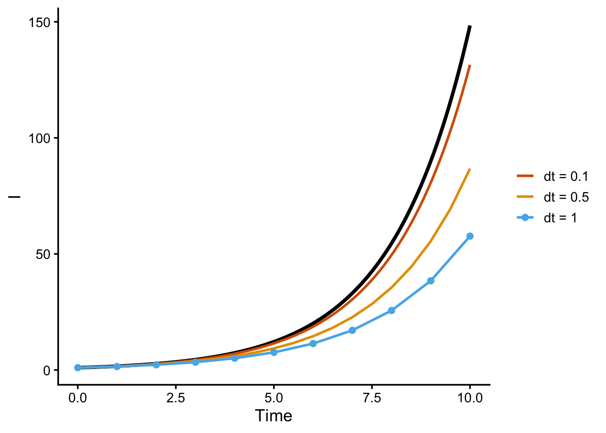
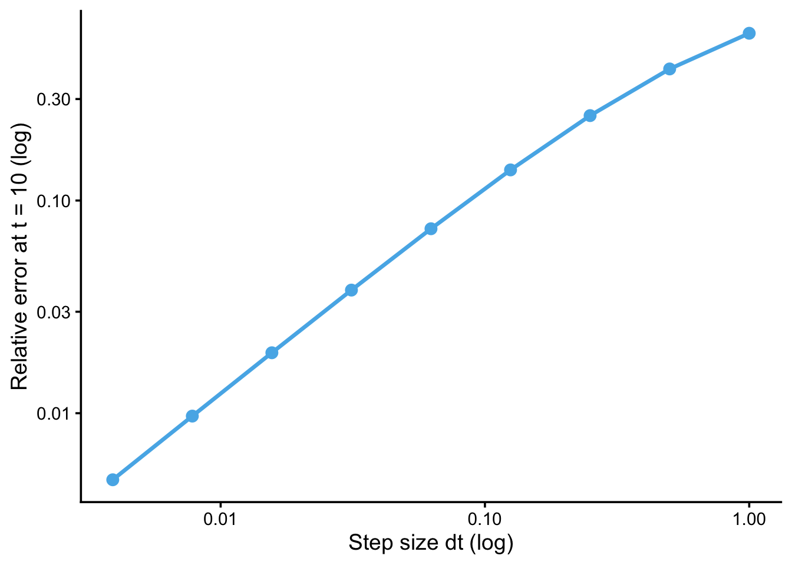
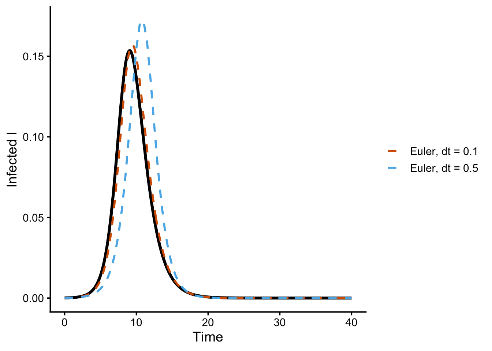
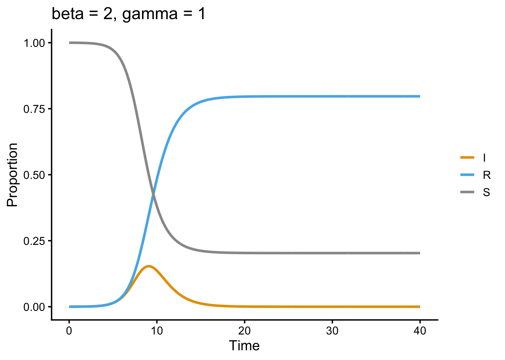
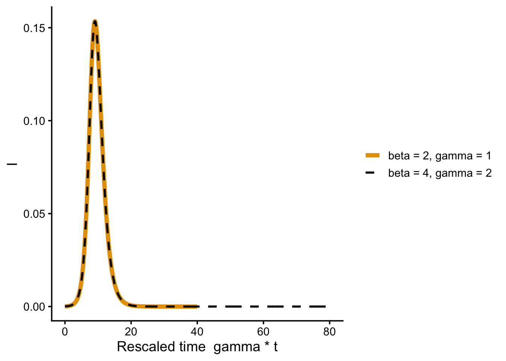

library(deSolve)
library(ggplot2)
library(tidyr)
theme_set(theme_classic(base_size = 14))
pal <- c(S = "#999999", I = "#E69F00", R = "#56B4E9")T0 — Solving differential equations in R
Day 1 · how a computer solves the SIR model
The goal. A differential equation tells you how fast something changes right now. Solving it means finding the whole curve over time. For most models, including SIR, there is no formula for that curve, so we let the computer build it step by step. This tutorial shows how that works, so that deSolve is not a black box.
1 · A model we can solve by hand
At the start of an epidemic almost everyone is susceptible, and the number infected grows at a constant per-capita rate \(r = \beta - \gamma\):
\[ \frac{dI}{dt} = r\, I \qquad\Rightarrow\qquad I(t) = I_0\, e^{rt}. \]
This is our test case: we know the exact answer, so we can check the computer against it.
2 · Euler’s method: one small step at a time
The derivative says how much \(I\) changes in a short time \(\Delta t\):
\[ I(t + \Delta t) \approx I(t) + \underbrace{r\, I(t)}_{dI/dt}\, \Delta t . \]
Start at \(I_0\), apply this rule over and over, and you get the whole curve.
euler_growth <- function(r, I0, tmax, dt) {
n <- round(tmax / dt)
I <- numeric(n + 1); I[1] <- I0
for (k in 1:n) {
I[k + 1] <- I[k] + r * I[k] * dt # today's value + change over one step
}
data.frame(time = (0:n) * dt, I = I)
}r <- 0.5; I0 <- 1; tmax <- 10
exact <- data.frame(time = seq(0, tmax, 0.01), I = I0 * exp(r * seq(0, tmax, 0.01)))
steps <- do.call(rbind, lapply(c(1, 0.5, 0.1), function(dt)
cbind(euler_growth(r, I0, tmax, dt), dt = paste("dt =", dt))))
ggplot() +
geom_line(data = exact, aes(time, I), linewidth = 1.4) +
geom_line(data = steps, aes(time, I, colour = dt), linewidth = 1) +
geom_point(data = subset(steps, dt == "dt = 1"), aes(time, I, colour = dt), size = 2) +
scale_colour_manual(values = c("#D55E00", "#E69F00", "#56B4E9")) +
labs(x = "Time", y = "I", colour = NULL)
How fast does the error shrink? Compare the Euler value at \(t = 10\) with the exact one for many step sizes:
dts <- 2^-(0:8)
err <- sapply(dts, function(dt) {
e <- euler_growth(r, I0, tmax, dt)
abs(tail(e$I, 1) - I0 * exp(r * tmax)) / (I0 * exp(r * tmax))
})
ggplot(data.frame(dt = dts, err = err), aes(dt, err)) +
geom_line(colour = "#56B4E9", linewidth = 1.2) + geom_point(size = 3, colour = "#56B4E9") +
scale_x_log10() + scale_y_log10() +
labs(x = "Step size dt (log)", y = "Relative error at t = 10 (log)")
Rule of thumb
The step must be small compared with the fastest time scale in the model. Here that is \(1/r = 2\) time units. At \(t = 10\), Euler with \(\Delta t = 1\) is off by about 60%, with \(\Delta t = 0.1\) by about 11%, and with \(\Delta t = 0.01\) by about 1%. Errors also accumulate over time, so long simulations need smaller steps.
3 · Euler for the SIR model
Exactly the same idea, now with three equations updated together:
\[ \frac{dS}{dt} = -\beta S I, \qquad \frac{dI}{dt} = \beta S I - \gamma I, \qquad \frac{dR}{dt} = \gamma I . \]
euler_sir <- function(beta, gamma, S0 = 1 - 1e-4, I0 = 1e-4, tmax = 40, dt = 0.1) {
n <- round(tmax / dt)
out <- matrix(NA_real_, n + 1, 4, dimnames = list(NULL, c("time", "S", "I", "R")))
S <- S0; I <- I0; R <- 1 - S0 - I0
out[1, ] <- c(0, S, I, R)
for (k in 1:n) {
dS <- -beta * S * I # compute ALL rates from the current state first,
dI <- beta * S * I - gamma * I
dR <- gamma * I
S <- S + dS * dt # ... then update all compartments together
I <- I + dI * dt
R <- R + dR * dt
out[k + 1, ] <- c(k * dt, S, I, R)
}
as.data.frame(out)
}
A classic bug
If you update S first and then compute dI with the new S, the compartments are no longer updated consistently and \(S + I + R\) drifts away from 1. Always compute all rates first, then update. Check: rowSums(euler_sir(2, 1)[, c("S", "I", "R")]) should be 1 everywhere.
4 · The same model with deSolve
deSolve::ode() does the stepping for you, with a much better method (lsoda) that chooses the step size automatically. You only write down the right-hand side of the equations:
sir <- function(t, state, p) {
with(as.list(c(state, p)), {
dS <- -beta * S * I
dI <- beta * S * I - gamma * I
dR <- gamma * I
list(c(dS, dI, dR))
})
}ds <- as.data.frame(ode(c(S = 1 - 1e-4, I = 1e-4, R = 0), seq(0, 40, 0.1), sir,
c(beta = 2, gamma = 1)))
eu <- rbind(cbind(euler_sir(2, 1, dt = 0.5), method = "Euler, dt = 0.5"),
cbind(euler_sir(2, 1, dt = 0.1), method = "Euler, dt = 0.1"))
ggplot() +
geom_line(data = ds, aes(time, I), linewidth = 1.4) +
geom_line(data = eu, aes(time, I, colour = method), linewidth = 1, linetype = "dashed") +
scale_colour_manual(values = c("#D55E00", "#56B4E9")) +
labs(x = "Time", y = "Infected I", colour = NULL)
From now on we use deSolve. But you now know what it does: many small steps from “rate of change now” to “state a moment later”.
5 · Explore the model
Two helpers so you can try many parameter values quickly:
run_sir <- function(beta, gamma, S0 = 1 - 1e-4, I0 = 1e-4, tmax = 40) {
as.data.frame(ode(c(S = S0, I = I0, R = 1 - S0 - I0), seq(0, tmax, 0.05), sir,
c(beta = beta, gamma = gamma)))
}
plot_sir <- function(out, title = NULL) {
long <- pivot_longer(out, -time, names_to = "compartment", values_to = "x")
ggplot(long, aes(time, x, colour = compartment)) +
geom_line(linewidth = 1.2) +
scale_colour_manual(values = pal) +
labs(x = "Time", y = "Proportion", colour = NULL, title = title)
}plot_sir(run_sir(beta = 2, gamma = 1), "beta = 2, gamma = 1")
Work through these questions in pairs. Write down your prediction before you run the code.
Q1 · Multiply \(\gamma\) or \(\beta\) by 2. What happens?
plot_sir(run_sir(beta = 4, gamma = 1), "beta doubled")
plot_sir(run_sir(beta = 2, gamma = 2), "gamma doubled")
Check your answer
Doubling \(\beta\) doubles \(R_0 = \beta/\gamma\) to 4: the epidemic is faster, higher, and infects almost everyone (final size about 98%). Doubling \(\gamma\) halves \(R_0\) to 1: the epidemic does not take off at all, because each case is now replaced by exactly one new case.
Q2 · Multiply \(\gamma\) and \(\beta\) by 2. Can you explain the result?
a <- run_sir(beta = 2, gamma = 1)
b <- run_sir(beta = 4, gamma = 2)
plot_sir(b, "both doubled")
max(a$I); max(b$I) # peak height
tail(a$R, 1); tail(b$R, 1) # final size
Check your answer
Same peak height, same final size, but everything happens twice as fast. Only the ratio \(\beta/\gamma = R_0\) decides whether and how big. The absolute values set the time scale. Mathematically: with the rescaled time \(\tau = \gamma t\) the equations depend on \(R_0\) only. Check it by plotting both runs against time * gamma: the curves fall on top of each other.
a <- run_sir(beta = 2, gamma = 1); b <- run_sir(beta = 4, gamma = 2)
ggplot() +
geom_line(data = a, aes(time * 1, I, colour = "beta = 2, gamma = 1"), linewidth = 2) +
geom_line(data = b, aes(time * 2, I, colour = "beta = 4, gamma = 2"), linewidth = 1, linetype = "dashed") +
scale_colour_manual(values = c("#E69F00", "black")) +
labs(x = "Rescaled time gamma * t", y = "I", colour = NULL)
Q3 · What are the equilibria, the states where nothing changes?
Hint: set \(dS/dt = dI/dt = dR/dt = 0\) and solve. Then check numerically by running the model for a long time:
out <- run_sir(beta = 2, gamma = 1, tmax = 200)
tail(out, 1) # where does it end up?
sir(0, unlist(tail(out, 1)[, -1]), c(beta = 2, gamma = 1)) # rates at the end: all ~ 0?
Check your answer
All three rates are zero exactly when \(I = 0\). So every state without infecteds is an equilibrium, whatever the split between \(S\) and \(R\). There is a whole line of equilibria, not a single point. The epidemic ends on this line at \(S_\infty = 1 - Z\), where \(Z\) is the final size.
Q4 · Are these equilibria stable? What would “stable” mean here?
Stable means: after a small disturbance, the system returns. Disturb a disease-free state by adding a few infecteds, once with many and once with few susceptibles:
plot_sir(run_sir(beta = 2, gamma = 1, S0 = 0.9, I0 = 1e-4), "S0 = 0.9")
plot_sir(run_sir(beta = 2, gamma = 1, S0 = 0.3, I0 = 1e-4), "S0 = 0.3")
Check your answer
With \(S = 0.9 > 1/R_0 = 0.5\) the few infecteds start an epidemic: that equilibrium is unstable. With \(S = 0.3 < 1/R_0\) they die out: stable. So the line of equilibria is unstable above \(S = 1/R_0\) and stable below it. This is exactly the herd immunity threshold from the lecture.
Q5 · What would you change in the model so the disease persists?
Check your answer
New susceptibles must keep arriving. Add births and deaths at rate \(\mu\): \(dS/dt = \mu - \beta S I - \mu S\) and \(dI/dt = \beta S I - (\gamma + \mu) I\). Then there is an endemic equilibrium with \(S^* = 1/R_0\) and \(I^* > 0\). Other routes: waning immunity (\(R \to S\)), or immigration of infecteds. T1 solves the model with births and deaths.
6 · Your turn: an SEIR model
Add an exposed (latent) class: infected but not yet infectious, leaving at rate \(\sigma\).
\[ \frac{dS}{dt} = -\beta S I, \quad \frac{dE}{dt} = \beta S I - \sigma E, \quad \frac{dI}{dt} = \sigma E - \gamma I, \quad \frac{dR}{dt} = \gamma I \]
- Write a function
seir(t, state, p)in the style ofsir()above, and solve it withode(). - Compare with SIR at the same \(\beta\) and \(\gamma\). What changes: the final size, the peak, the timing?
- Optional: solve it with your own Euler loop too. Which step size do you need when \(\sigma\) is large (a short latent period)?